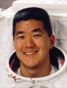

Lyndon B. Johnson Space Center
Houston, Texas 77058
|
National Aeronautics and Space Administration Lyndon B. Johnson Space Center Houston, Texas 77058 |
 |
Biographical Data |
||
Daniel M. Tani
NASA Astronaut (FORMER)
PERSONAL DATA: Born February 1, 1961, in Ridley Park, Pennsylvania, but considers Lombard, Illinois, to be his hometown. Married to the former Jane Egan from Cork, Ireland. They have three children. He enjoys golf, flying, running, tennis, music and cooking. His mother, Rose Tani, and father, Henry N. Tani, are deceased.
EDUCATION: Graduated from Glenbard East High School, Lombard, Illinois, in 1979; received a Bachelor and a Master of Science degree in Mechanical Engineering from Massachusetts Institute of Technology (MIT) in 1984 and 1988, respectively.
AWARDS: Honorary Doctorate of Science, Elmhurst College (IL) 2003. Excellence Award in Science and Technology, U.S. Pan Asian American Chamber of Commerce, 2003. Japanese-American Citizen League's Nikkei of the Biennium for Science and Technology, 2002. NASA Spaceflight Medal, 2001. Orbital Sciences Corporation's Outstanding Technical Achievement Award, 1993.
EXPERIENCE: After Tani received his Bachelor's degree from MIT, he worked at Hughes Aircraft Corporation in El Segundo, California, as a Design Engineer in the Space and Communications group. In 1986, he returned to MIT and received his Master's degree in Mechanical Engineering in 1988, specializing in human factors and group decision making. After graduation, Tani worked for Bolt Beranek and Newman in Cambridge, Massachusetts, in the Experimental Psychology department. In 1988, Tani joined Orbital Sciences Corporation (OSC) in Dulles, Virginia, initially as a Senior Structures Engineer and then as the Mission Operations Manager for the Transfer Orbit Stage (TOS). In that role, he served as the TOS Flight Operations lead, working with NASA/JSC Mission Control in support of the deployment of the Advanced Communications Technology Satellite (ACTS)/TOS payload during the STS-51 mission in September 1993. Tani then moved to the Pegasus program at OSC as the Launch Operations Manager. In that capacity, he served as lead for the development of procedures and constraints for the launching of the air-launched Pegasus unmanned rocket. Tani also was responsible for defining, training and leading the team of engineers who worked in the launch and control room.
NASA EXPERIENCE: Selected as an astronaut candidate by NASA in April 1996, Tani reported to JSC in August 1996. Having completed two years of training and evaluation, he qualified for flight assignment as a Mission Specialist in 1998. He held technical duties in the Astronaut Office Computer Support Branch, and EVA Branch and served as a Crew Support Astronaut (CSA) for Expedition 4. In 2002, he was a crew member on the Aquarius undersea research habitat for nine days as part of the NASA Extreme Environment Mission Operations (NEEMO)-2 mission. Tani then trained and qualified as the backup Flight Engineer for Expedition 11. After his flight on Expedition 16, Tani served as Branch Chief of the International Space Station branch. He also served as a Capsule Communicator (CAPCOM) for the International Space Station and was the lead CAPCOM for Expedition 26.
Tani left NASA in August 2012 to become the Vice President of Mission and Cargo Operations in the Advanced Programs Group of Orbital Sciences Corporation in Dulles, Virginia.
SPACE FLIGHT EXPERIENCE: STS-108 Endeavour (December 5 to December 17, 2001) was the 12th shuttle flight to visit the International Space Station. During the mission, Tani served as Mission Specialist 2. Endeavour's crew delivered the Expedition 4 crew and returned the Expedition 3 crew to Earth. The crew unloaded more than three tons of supplies and science experiments from the Raffaello Multi-Purpose Logistics Module. Tani performed a spacewalk to wrap thermal blankets around the station solar array gimbals. STS-108 was accomplished in 185 Earth orbits, traveling 4.8 million miles in 283 hours and 36 minutes, including a spacewalk lasting 4 hours and 12 minutes.
On his second spaceflight, Tani served as Expedition-16 Flight Engineer and spent 120 days living and working aboard the International Space Station. He launched to the Station aboard STS-120 on October 23, 2007, and returned aboard STS-122, landing at Kennedy Space Center, Florida, on February 20, 2008. During his tour of duty aboard the station, he performed numerous robotic operations in support of the installation and checkout of Node-2 and logged a total of 34 hours and 59 minutes during five spacewalks.
AUGUST 2012